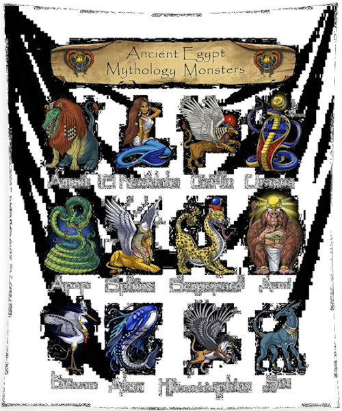
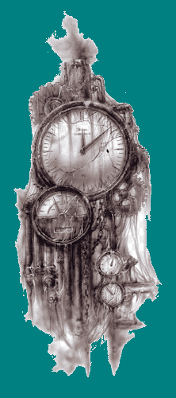

En un aquelarre de Alta Magia,
Helen Mirren se mostró muy interesada en el proyecto de Mageia Imperatum según confesó a Codex
Ludis.
Aseguró que sería un honor ser parte del mismo y que estaría encantada de colaborar con los
desarrolladores de la constelación.
En un aquelarre de Alta Magia,
Helen Mirren se mostró muy interesada en el proyecto de Mageia Imperatum según confesó a Codex
Ludis.
Aseguró que sería un honor ser parte del mismo y que estaría encantada de colaborar con los
desarrolladores de la constelación.
Editorial
 Arribaste, nauta de estos extraños tiempos, a este
espacio en el que encontraras novedades relativas al sitio y sus dependencias, si te registrás
recibirás en
tu casilla electrónica, un resumen semestral de actividades y jugosos descuentos en el Mercado de
Curiosidades actualmente en construcción.
Arribaste, nauta de estos extraños tiempos, a este
espacio en el que encontraras novedades relativas al sitio y sus dependencias, si te registrás
recibirás en
tu casilla electrónica, un resumen semestral de actividades y jugosos descuentos en el Mercado de
Curiosidades actualmente en construcción.

¡Fabuloso!
¡Novedades en el sitio!
 ¡Nuevas y excitantes noticias para los
asiduos del Mageia Imperatum! ¡Una avalancha de innovaciones nos pone contra la pared a la hora de
actualizar el sitio! Las nuevas secciones incluirán un Mercado de coleccionables y curiosidades, un
debatible Foro de discusión y un apartado de Preguntas Frecuentes. ¡No te lo
pierdas!
¡Nuevas y excitantes noticias para los
asiduos del Mageia Imperatum! ¡Una avalancha de innovaciones nos pone contra la pared a la hora de
actualizar el sitio! Las nuevas secciones incluirán un Mercado de coleccionables y curiosidades, un
debatible Foro de discusión y un apartado de Preguntas Frecuentes. ¡No te lo
pierdas!
El Mercado en Mageia Imperatum.
Por el momento y hasta que el propio Mercado de Curiosidades y Coleccionables este en pleno funcionamiento, te presentamos por este medio, estimado nauta, un pequeño avance de algunos de los productos que luego podrás encontrar en el sitio.
De la mano del genial Ciruelo algunas de sus famosas piezas de arte, que estarán disponibles en el Mercado de Curiosidades y Coleccionables.


¿Tu corazón late por la facción de los creadores de efigies y momias en Tebalexand? ¡No te lo pierdas!

Mazos de cartas de calidad excepcional, maravillosamente ilustrados con algunas de las más impresionantes creaturas de Mageia.


¡El cosplay ideal para el próximo Fantasycon lo encontrás en el Mercado de Curiosidades!

Desde la zona del Kanato nos llegan estas delicadas miniaturas, mágicamente capturadas en ámbar cristalizado por artífices excepcionales, que muestran dos de las creaturas típicas de la mitofauna de esa zona de la constelación.


Aunque se los conoce por su ferocidad, muchos de quienes adoptan algún espécimen de la especie Kerberii, establecen fortísimos lazos afectivos con este, debido muy probablemente a la lealtad incondicional que los caracteriza.

Los herreros del cúmulo de enanas templadas Tyrion Doom forjaron estas magníficas piezas desmontables y articuladas en sus fraguas, ¿te animarás a resolver el puzzle?

Esta es una pieza de colección inspirada en una de las creaciones del Maestro Luis Royo, disponible el código de impresión o la figurilla 3D

Finalmente aunque no menos importantes, unos familiares con conjuros de protección para el hogar y los más pequeños


¡Muy pronto podrás conseguir todo esto y mucho más en el Mercado de Curiosidades y Coleccionables de Mageia Imperatum!
¿Por qué es tan importante la participación en el Foro de la Comunidad?
 Entre las
razones menos
evidentes está la de ampliar la red de contactos de forma efectiva, duradera y segura, con foco en
el
nicho de interés compartido por los miembros de la comunidad. El ámbito moderado y la pausa forzada
por el medio, permiten un bajo nivel de stress en las relaciones y una alta respuesta a las
inquietudes.
Entre las
razones menos
evidentes está la de ampliar la red de contactos de forma efectiva, duradera y segura, con foco en
el
nicho de interés compartido por los miembros de la comunidad. El ámbito moderado y la pausa forzada
por el medio, permiten un bajo nivel de stress en las relaciones y una alta respuesta a las
inquietudes.

Claro que el tiempo de elaboración de las redes sociales menos protocolares es muchísimo mas corto, haciéndose eco del concepto popular de que lo bueno, si breve, dos veces bueno. Lo que puede ser muy popular, no siempre es lo mejor. Además de los temarios evidentes como
las clasificaciones de la mitofauna de Mageia, la descripción de los elementos de las facciones
nobiliarias y mágicas y sus respectivos símbolos, la geografía política de la constelación con su
pléyade planetaria dispar y sectorizada en multiples fórmulas de gobierno, el arte, la música y las
diferentes ramas de los estudios de la magia, la participación en el foro permitirá acceder a
algunos de los oscuros volúmenes de la historia de Mageia, como la descripción de los místicos
orígenes de los códices de Tlön, Uqbar y Orbis Tertius.
Además de los temarios evidentes como
las clasificaciones de la mitofauna de Mageia, la descripción de los elementos de las facciones
nobiliarias y mágicas y sus respectivos símbolos, la geografía política de la constelación con su
pléyade planetaria dispar y sectorizada en multiples fórmulas de gobierno, el arte, la música y las
diferentes ramas de los estudios de la magia, la participación en el foro permitirá acceder a
algunos de los oscuros volúmenes de la historia de Mageia, como la descripción de los místicos
orígenes de los códices de Tlön, Uqbar y Orbis Tertius.
 Por eso, estimado nauta, ¿a que esperar? ¡súmate ahora mismo a nuestra comunidad!¡llena el
formulario de registro y disfruta de todo lo que tenemos para ofrecerte!
Por eso, estimado nauta, ¿a que esperar? ¡súmate ahora mismo a nuestra comunidad!¡llena el
formulario de registro y disfruta de todo lo que tenemos para ofrecerte!